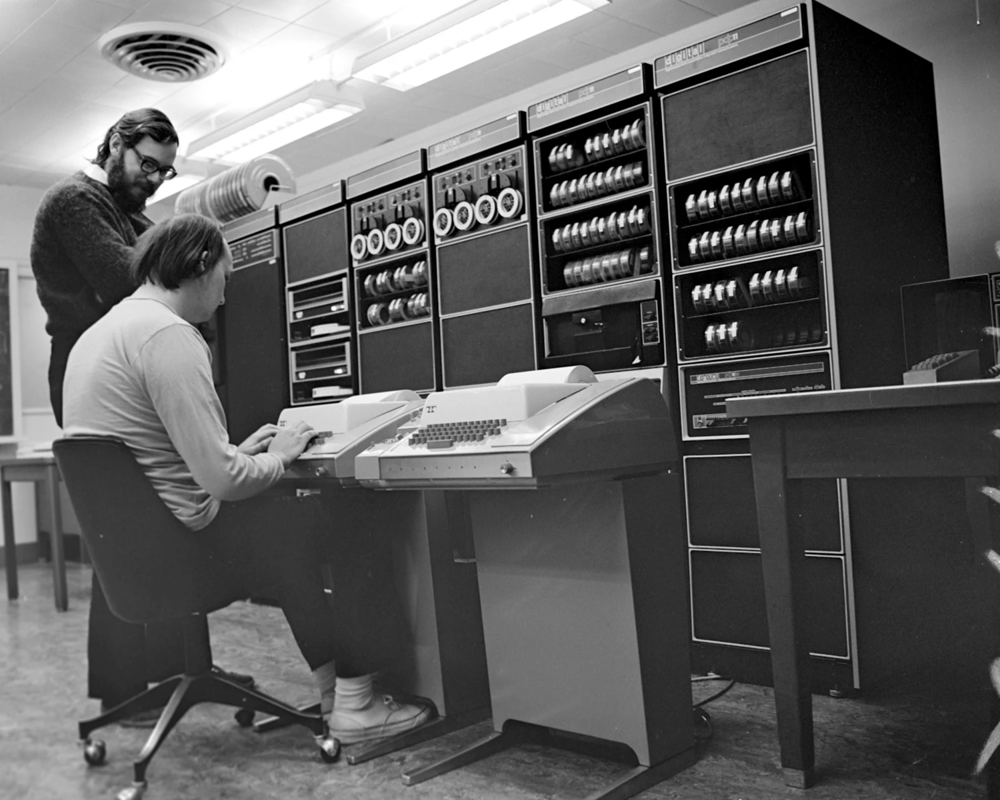
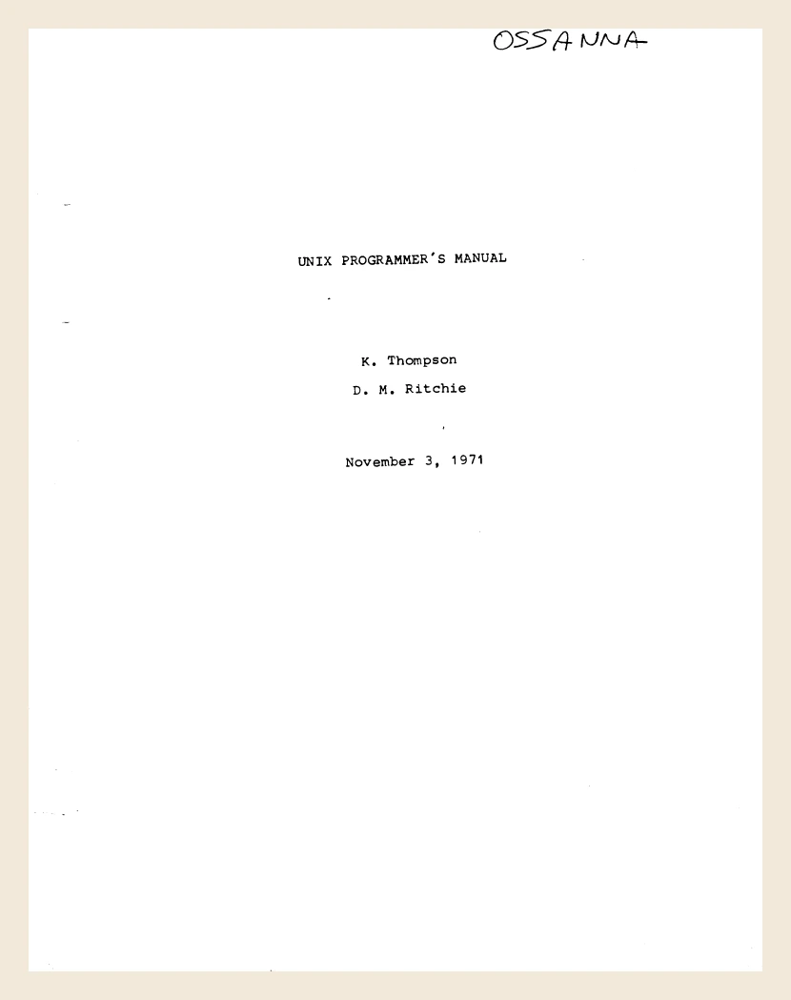

PUC-Campinas / Fundamentos de Sistemas Operacionais
História do
UNIX
Criação e desenvolvimento
- Miguel Fernandes Costacurta
25003110 - Pedro Henrique Contardi Soler
25005592 - Vinicius Panutti Salgado
25007329
Bell Labs, c. 1972 · Arquivo Dennis Ritchie
Índice
Abertura e criação
Arquivos e processos
Portabilidade e legado
- 10O kernel passou para CA reescrita de 1973 e o uso de estruturas.
- 11A prova da portabilidadeO que mudou no porte para o Interdata.
- 12Várias versões, interfaces em comumBSD, System V e o padrão POSIX.
- 13O que o UNIX deixouComposição de programas e interfaces reutilizáveis.
- 14Fontes consultadasArtigos, acervos e materiais da disciplina.
- 15Obrigado.Agradecimento do grupo.
Bell Labs / 1969
Depois do Multics
Quando o Bell Labs saiu do projeto Multics, seus pesquisadores ainda queriam trabalhar de forma interativa, em uma máquina compartilhada.
Sessões interativas dividem a CPU e outros recursos.
Thompson e Ritchie usam o PDP-7 para levar Space Travel a um terminal gráfico.
O sistema de arquivos de Thompson, Ritchie e Canaday vira a base de um SO escrito em assembly.
Bell Labs / 1970–1971
O UNIX chega
ao PDP-11
O departamento de patentes do Bell Labs usou UNIX para editar e formatar seus documentos.
24 KBMemória do PDP-11/20 descrito no primeiro manual. A edição de novembro de 1971 já documentava chamadas de sistema e arquivos especiais.
Arquitetura / UNIX clássico
A fronteira
do kernel
O shell interpreta comandos em espaço de usuário. Uma chamada de sistema faz a CPU entrar em modo privilegiado para que o kernel trate a solicitação.
open()read()fork()Verifica permissões, resolve descritores, aciona drivers e gerencia processos.
Sistema de arquivos
“Tudo é
um arquivo”
Arquivos comuns e vários dispositivos podem ser abertos por nome e usados por meio de operações de E/S semelhantes.
fd = open(caminho, flags)Para caminhos, o kernel devolve um descritor. Para um pipe, devolve dois.eventos.txtArquivo regular · permite mudar a posição de leitura/dev/ttyTerminal controlador · acesso por arquivos de dispositivopipe()Canal anônimo · usa descritores sem caminho de arquivoread(fd, …)Mesma operação. O kernel trata cada objeto de acordo com seu tipo.Sistema de arquivos / identificação
Do nome ao
descritor
Um diretório associa nomes a números de inode. Ao abrir um arquivo, o processo recebe um número para referenciar aquela abertura.
eventos.txt→inodeO diretório associa o nome ao inode, que guarda tipo, dono e permissões.
fd 3→abertura→inodeO descritor indexa a tabela do processo. A abertura mantém a posição de leitura.
Depois de fork(), os descritores herdados apontam para as mesmas aberturas.
Demonstração / comandos POSIX
A saída de um
vira entrada
Quantas linhas de um registro contêm ERRO?
McIlroy propôs ligar comandos. O pipe tornou essa ideia parte do UNIX.
OK inicialização ERRO disco OK login ERRO leitura
Processos / o que o shell prepara
O pipe por dentro
grepwrite() pela saída padrão / fd 1wcread() pela entrada padrão / fd 0O shell pede ao kernel um canal de bytes. Recebe um descritor de leitura e um de escrita.
Research UNIX / 1973
O kernel
passou para C
Reescrever o núcleo em C reduziu a dependência da linguagem de máquina e facilitou a manutenção do código.
BCPLBC
Thompson desenvolveu B. Ritchie acrescentou tipos e evoluiu a linguagem para C.
CC permitiu agrupar campos de um inode em uma estrutura e acessar cada campo pelo nome. Em B, o código precisava calcular posições explicitamente.assemblyRotinas que dependiam diretamente da CPU continuaram específicas da máquina.PDP-11 / Interdata 8/32 / 1977–1978
A prova da
portabilidade
O Bell Labs levou UNIX a outra arquitetura. O trabalho exigiu um compilador para o alvo e adaptações em drivers e rotinas da máquina.
de cerca de 7.000 linhas da parte do kernel estudada eram idênticas nas duas versões.
exec()O código de montagem dos argumentos mudou porque as pilhas cresciam em sentidos opostos nas duas CPUs.Difusão / universidades e indústria
Várias versões, interfaces em comum
O licenciamento levou o código a outros grupos. A diversidade de versões tornou a compatibilidade uma questão prática.
Anos 1970BSDBerkeley amplia UNIX. O 4.2BSD (1983) inclui TCP/IP.
1983System VA AT&T consolida sua linha comercial.
1988POSIX.1O IEEE padroniza interfaces de programação para facilitar o porte de programas.
Conclusão
O que o UNIX
deixou
O pipeline reúne duas decisões que atravessaram gerações de sistemas: interfaces de E/S reutilizáveis e programas que o shell pode combinar.
grep … | wc -lProcessos independentes trocam bytes pelo kernel.
Grande parte do código sobrevive à troca de máquina.
Programas podem ser adaptados a implementações diferentes.
Fontes consultadas
Artigos
-
The Evolution of the Unix Time-sharing System
Dennis Ritchie, 1979
-
The UNIX Time-Sharing System
Dennis Ritchie e Ken Thompson, 1974
-
The Development of the C Language
Dennis Ritchie, 1993
-
Portability of C Programs and the UNIX System
Stephen Johnson e Dennis Ritchie, 1978
História e documentação
-
pipe(7) · Visão geral de pipes e FIFOs
Linux man-pages
-
History of UNIX
The Open Group
-
The Single UNIX Specification
The Open Group
-
Berkeley Software Distribution Records
Bancroft Library, UC Berkeley
Materiais e acervo
-
Aula 01 · Apresentação e introdução
Lucas Reis, PUC-Campinas
-
Aula 02 · Processos e threads
Lucas Reis, PUC-Campinas
-
Aula 07 · E/S e sistemas de arquivos
Lucas Reis, PUC-Campinas
-
UNIX Programmer’s Manual
Ken Thompson e Dennis Ritchie, 1971
-
Thompson e Ritchie no PDP-11
Fotografia de capa, c. 1972
PUC-Campinas
Obrigado.
- Miguel Fernandes Costacurta
- Pedro Henrique Contardi Soler
- Vinicius Panutti Salgado